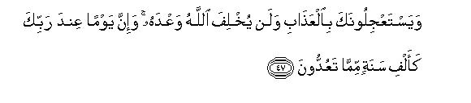
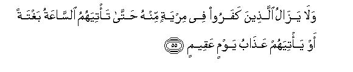

بسم الله الرحمن الرحيم
Sayyid Abul Ala Maududi - Tafhim al-Qur'an - The Meaning of the Qur'an
 22.
Surah Al Hajj (The Hajj)
22.
Surah Al Hajj (The Hajj)
This Surah takes its name from v. 27.
As this Surah contains the characteristics of both the Makki and the Madani Surahs, the commentators have differed as to its period of revelation, but in the light of its style and themes we are of the opinion that a part of it (vv. 1-24) was sent down in the last stage of the Makki life of the Holy Prophet a little before migration and the rest (vv. 25-78) during the first stage of his Madani life. That is why this Surah combines the characteristics of both the Makki and the Madani Surahs.
The sudden change of the style from v. 25 shows that probably vv. 25-78 were sent down in the month of Zul-Hijjah in the very first year after Hijrah. This is indicated by vv. 25-41 and confirmed by the occasion of the revelation of vv. 39-40. It appears that the month of Zul-Hijjah must have brought to the immigrants nostalgic memories of their homes in Makkah and naturally they must have thought of their Sacred City and of their Hajj congregation there, and grieved to think that the mushrik Quraish had debarred them from visiting the Sacred Mosque. Therefore, they might even have been praying for and expecting Divine permission to wage war against those tyrants who had expelled them from their homes and deprived them of visiting the House of Allah and made it difficult for them to follow the way of Islam. It was at this psychological occasion that these verses were sent down. That is why the purpose for which Masjid-al- Haram was built has been specifically mentioned. It has been made plain that Hajj(pilgrimage) had been enjoined for the worship of One Allah. But it is an irony that afterwards it had been dedicated to the rituals of shirk and the worshipers of One Allah had been debarred from visiting it. Therefore, permission for waging war against those tyrants has been given to oust them from there and to establish the righteous way of life for establishing virtue and eradicating evil. According to Ibn Abbas, Mujahid, Urwah bin Zubair, Zaid bin Aslam, Muqatil bin Hayyan, Qatadah and other great commentators, v. 39 is the first verse that grants the Muslims permission to wage war. Collections of Hadith and books on the life of the Holy Prophet confirm that after this permission actual preparations for war were started and the first expedition was sent to the coast of the Red Sea in Safar A.H. 2, which is known as the Expedition of Waddan or Al- Abwa.
This Surah is addressed to: (1) The mushriks of Makkah, (2) the wavering Muslims, and (3) the True Believers. The mushriks have been warned in a forceful manner to this effect: "You have obdurately and impudently persisted in your ideas of ignorance and trusted in your deities instead of Allah, though they possess no power at all and you have repudiated the Divine Messenger. Now you will meet the same end as has been the doom of those like you before. You have only harmed yourselves by rejecting Our Prophet and by persecuting the best element of your own community; now your false deities shall not be able to save you from the wrath of God". At the same time, they have been admonished time and again for their creed of shirk and sound arguments have been given in favor of Tauhid and the Hereafter.
The wavering Muslims, who had embraced Islam but were not prepared to endure any hardship in its way, have been admonished to this effect: "What is this faith of yours? On the one hand, you are ready to believe in Allah and become His servants provided you are given peace and prosperity but, on the other, if you meet with afflictions and hardships in His Way, you discard your Allah and cease to remain His servant. You should bear in mind that this wavering attitude of yours cannot avert those misfortunes and losses which Allah has ordained for you."
As regards the true Believers, they have been addressed in two ways: (1) in a general way so as to include the common people of Arabia also, and (2) in an exclusive way:
The Believers have been told that the mushriks of Makkah had no right to debar them from visiting the Holy Mosque. They had no right to prevent anyone from performing Hajj because the Holy Mosque was not their private property. This objection was not only justified but it also acted as an effective political weapon against the Quraish. For it posed this question to the other clans of Arabia: Were the Quraish mere attendants of the Holy Mosque or its owners? It implied that if they succeeded in debarring the Muslims from Hajj without any protest from others, they would feel encouraged in future to debar from Hajj and Umrah the people of any other clan, who happened to have strained relations with the Quraish. In order to emphasize this point, the history of the construction of the Holy Mosque has been cited to show that it was built by Prophet Abraham by the Command of Allah and he had invited all the peoples to perform Hajj there. That is why those coming from outside had enjoyed equal rights by the local people from the very beginning. It has also been made clear that that House had not been built for the rituals of shirk but for the worship of One Allah. Thus it was sheer tyranny that the worship of Allah was being forbidden there while the worship of idols enjoyed full license.
In order to counteract the tyranny of the Quraish, the Muslims were allowed to fight with them. They were also given instructions to adopt the right and just attitude as and when they acquired power to rule in the land. Moreover, the Believers have been officially given the name of "Muslims", saying, "You are the real heirs to Abraham and you have been chosen to become witnesses of the Truth before mankind. Therefore you should establish salat and pay the zakat dues in order to become the best models of righteous life and perform Jihad for propagating the Word of Allah." (vv. 41,77, 78.)
It will be worth while to keep in view the introductions to Chapters II (Al-Baqarah) and VIII (Al Anfal).

In the name of Allah, the Compassionate, the Merciful.
[1-2] O people, save yourselves from the wrath of your Lord: the fact is that the earthquake of the Resurrection is a terrible thing.1 On the Day you behold it, you will see that every suckling woman will forsake her suckling,2 and every pregnant female will cast her burden, and the people will appear to you to be intoxicated, though they will not be drunk, but the dreadful torment from Allah will be such (as to make them reel like drunkards).3
[3-7] There are some among the people, who indulge in discussions about Allah without any knowledge4 and follow every rebellious Satan, concerning whom it has been decreed that he will mislead whoever takes him for a friend and will show him the way to the torment of Hell. O people, if you have any doubt about Life after death, you should know that We first created you of clay, then of a sperm-drop5 then of a clot of blood, then of a lump of flesh, shaped or shapeless.6 ( We are telling you this) so that We may make the reality plain to you. And We make those (sperm drops), which We will, remain in the wombs for a fixed period, then We bring you forth as a child; then (We nourish you) so that you may attain to your full youth. And there may be among you one who is recalled earlier and one who is returned to the most abject age so that he should know nothing even after knowing all he could.7 And you see the land lying dry and barren, but as soon as We send down rain water upon it, it stirs (to life), and swells and brings forth every kind of luxuriant vegetation. This is so because Allah is the Truth.8 He brings the dead to life and He has power over everything and (this is a proof that) the Hour of Resurrection is sure to come and there is absolutely no doubt about it, and most surely He will raise up those who are lying in the graves.9
[8-10] There are still others who arrogantly10 dispute about Allah without any knowledge11 and guidance12 and illuminating Book,13 so that they may lead people astray from Allah's Way.14 Such a one shall incur disgrace in this world, and on the Day of Resurrection, We will make him taste the torment of the Fire, saying, "This is the future you have prepared for yourself with your own hands" . In fact, Allah is not unjust to His servants.
[11-16] And there is a type of man who serves Allah standing on the borders (of the Faith15 ); is if some good comes to him, he is satisfied (with his Faith), but if he encounters a trial, he turns his back (upon it).16 Thus he loses both this world and the Hereafter: this is the manifest loss.17 Then, instead of Allah, he invokes those who can do him neither harm nor good: this is the last extremity of deviation. He invokes those who are more likely to do him harm than good.18 What an evil guardian he chooses and what an evil companion!19 As for those who believed and did righteous deeds,20 Allah will admit them to Gardens underneath which canals will be flowing. Allah does whatever He wills.21 As for the one who presumes that Allah will neither help him in this world nor in the Hereafter, he should (if he can) ascend the sky by a rope and cut a hole into it and then peep through it and see for himself whether any device of his can avert his doom, which he abhors22 And We have sent down this Qur'an with clear teachings such as these, but Allah alone guides whomsoever He wills.
[17-18] As regards those who believed23 and those who became Jews24 and the Sabaeans25 and the Christians26 and the Magians27 and those who committed shirk,28 Allah will judge between them on the Day of Resurrection,"29 for everything is in the sight of Allah. Do you not see that everything in the heavens and the earth bows down before Allah?30 31 and so do the sun, and the moon and the stars, and the trees and the beasts and a large number of the people32 and even a large number of those who have deserved the torment.33 And the one whom Allah degrades and disgraces has none to make him worthy of honor;34 Allah does whatever He wills.35
[19-24] These are the two parties who have disputed about their Lord.36 As regards those who have disbelieved, garments of fire have already been cut out for them;37 over their heads shall be poured boiling water, which will melt not only their skins but also the inner parts of their bellies and there shall be maces of iron to lash them. Whenever in their anguish they will try to come out of Hell, they shall be driven back into it (with the rebuke): "Taste now the torment of burning." As regards those, who believed and did righteous works, Allah will admit them into Gardens underneath which canals will be flowing: there they will be decorated with golden bracelets and pearls,38 and their garments will be of silk'. (This is because) they were guided to accept the pure Word,39 and shown the Way of the All Praiseworthy.40
[25] Those who disbelieved,41 and are (now) debarring others from the Way of Allah and from visiting that Sacred Mosque,42 which We have assigned to all mankind with equal rights for its dwellers and the outsiders,43 (surely deserve punishment); whosoever shall deviate from righteousness, and adopt in this (Sacred Mosque) the way of iniquity,44 We will make him taste a painful chastisement.
[26-29] Recall to mind the time when We assigned the site of this House (the Ka`bah) to Abraham, saying, "Do not associate anything as a partner with Me; keep My House clean and pure45 for those who go round it and for those who stand and bow down and prostrate (in worship), and make a proclamation to the people to come to you for Hajj from far and near, on foot and on lean46 camels47 so that they may witness the benefits that have been made available here for them:48 and during the known appointed days, they should mention the name of Allah over the cattle He has provided them:49 then they may eat their flesh and also give of it to the indigent and needy.50 Then they should clean off their "dirt51 fulfill their vows52 and go round the "Ancient House."53
[30] This was (the object for which the Ka`bah was built,) and whoso observes the sanctity of the things ordained by Allah, it will be best for him in the sight of his Lord.54
[31] And the cattle have been made lawful for you55 except what has already been mentioned to you;56 therefore guard yourselves against the filth of idols,57 and refrain from all false things.58 Become Allah's sincere servants, turning away from everything and without associating any partner with Him, for the one who associates a partner with Allah, becomes like him who has fallen from heaven. Then either the birds will snatch him away or the wind will blow him off to a place where he will be shattered into pieces.59

[32] This is the fact of the matter: (so understand it well.) And whoso observe the sanctity of what have been ordained as Symbols60 of Allah, do so because of the piety of the hearts.61
[33] You are permitted to derive benefits from the cattle dedicated for sacrifice) up to an appointed time.62 Thereafter the (lawful) place (of their sacrifice) is near the Ancient House.63
[34-35] For every community We have prescribed a way of sacrifice so that the people (of that community) should pronounce the name of Allah over the cattle which He has provided for them,64 (but one and the same object underlies all the different ways). So your Deity is One Deity: surrender to Him alone. And, O Prophet, give good news to those who adopt a humble way,65 whose hearts are filled with awe when Allah is mentioned before them: who endure with fortitude any affliction that befalls them: and who establish Salat and expend of what We have given them.66
[36] And We have included the camels67 (dedicated for sacrifice) among the Symbols of Allah, for there is much good for you in them.68 Therefore make them stand69 and mention the name of Allah over them,70 and when (after the sacrifice,) their backs lie still on the ground,71 you may eat of their flesh and give of it to the contented ones and to those who ask for it. Thus have We subjected these animals to you so that you may be grateful.72

[37] (Note it well that) neither their flesh reaches Allah nor their blood, but it is your piety that reaches Him.73 Thus has Allah subjected these animals to you so that you should glorify Him for the guidance He has given you.74 And, O Prophet, give good news to those who do righteous works.
[38-41] Assuredly75 Allah defends those who have believed76 for He does not like any treacherous, ungrateful wretch77 at all. Permission (to fight) has been granted to those against whom war has been waged because they have been treated unjustly,78 and Allah is certainly able to help them.79 These are the people who have been expelled unjustly from their homes80 only for the reason that they said, "Our Lord is Allah."81 Had Allah not repelled one people by means of another people, monasteries, churches, synagogues82 and mosques, wherein the name of Allah is often mentioned, would have been demolished.83 Allah will surely help those people who help Him:84 Allah is indeed All-Powerful, All-Mighty. These are the people who, if We give them power in the land, will establish Salat, pay the Zakat dues, enjoin what is right and forbid what is evil,85 and the final decision of all affairs is in the hand of Allah.86
[42-46] O Prophet, if they87 treat you as false, (you should remember that) before them the people of Noah, and the tribes of Ad and Thamud, and the peoples of Abraham and Lot and the dwellers of Midian had treated their Prophets as false and likewise Moses was also rejected. At first I gave respite to all these disbelievers and then seized them.88 Now you can see for yourselves how terrible was My chastisement!89 There are (the ruins of) many a wicked habitation which We destroyed: today they are lying upside down upon their roofs. How many a well has been rendered useless,90 and how many a lofty castle is lying in ruins! Have they not gone about in the land so as to make their hearts think and ears hear? The fact, however, is that it is the hearts in the breasts and not the eyes that become blind.91

[47-48] These people are demanding of you to hasten the chastisement.92 Allah will never fail to fulfill His threat, but a day with your Lord is equal to a thousand years as you reckon.93 There has been many a wicked habitation, whom at first I gave respite and then seized it, and all shall have to return to Me.
[49-51] O, Muhammad, say to them: "O people, I am merely a warner94 who informs you plainly (of the coming evil time)." So those who believe and do righteous deeds shall have forgiveness and honorable provision,95 and those, who will strive to discredit Our Revelations, shall become the dwellers of Hell.
[52-54] And, O Muhammad, (it has always been so with) every Messenger and Prophet96 We sent before you that whenever he had a desire,97 Satan tried to interfere with his desire.98 But Allah eradicates the mischiefs worked by Satan and confirms His Revelations,99 for Allah is All-Knowing, All-Wise,100 (He allows this) so that He may make Satan's obstacles a trial for those, whose hearts suffer from the disease (of hypocrisy) and whose hearts are false--the fact is that these unjust people have gone far away in their enmity-and so that those who have knowledge may realize that this (Message) is the Truth from Allah and may believe in it, and their hearts may submit humbly to it. Most surely Allah always guides the Believers to the Straight Way.101


[55-60] Yet the disbelievers will always remain in doubt about it until the Hour of Resurrection overtakes them suddenly or the scourge of a "barren" day102 descends upon them. On that Day Allah will reign supreme, and He will judge between them; then those who will have believed and done righteous works, will go to the Gardens of Bliss, but those who will have disbelieved and treated Our Revelations as false, shall receive an ignominious punishment. As for those, who left their homes for the sake of Allah and then were killed or died, Allah will make for them a generous provision) and Allah is the best of Providers. He will admit them to a place with which they will be well pleased; indeed Allah is All-Knowing and Clement.103 This is about them. As regards the one, who takes vengeance equal to the wrong that had been done to him, and has again been oppressed, Allah will surely help him.104 Allah is Forgiving and Forbearing.105
[61-64] So it is106 because it is Allah Who brings forth the day from the night and the night from the day107 and He hears everything and sees everything.108 This is so because it is Allah alone Who is the Truth and all others, whom they invoke besides Him, are falsehood,109 and Allah is the Supreme and the Exalted One. Do you not see that Allah sends down rain water from the sky and the land becomes green because of it?110 The fact is that Allah works in imperceptible ways and is fully aware of everything.111 To Him belongs all that is in the heavens and the earth and undoubtedly Allah is All-Sufficient and All-Praiseworthy.112
[65-66] Do you not see that He has subdued to you all that is in the earth and that He has subjected the boat to the law that she floats over the sea at His bidding, and He is supporting the sky in a way that it cannot fall down without His permission?113 The fact of the matter is that Allah is very Kind and Merciful to the people. He it is Who has given you life and causes your death, and He will again bring you to life; yet Man denies the Truth.114

[67-70] For every community115 We have prescribed a way of worship,116 which it follows; therefore, O Muhammad, let them not dispute with you concerning this matter.117 And invite the people to the Way of your Lord, for you are on the Straight Way.118 And if they dispute with you, say to them, "Allah knows full well what you are doing: on, the Day of Resurrection, Allah will judge between you concerning that about which you differ". Do you not know that Allah has full knowledge of everything in the heavens and the earth ? Every thing has been recorded in a Book; this is an easy thing for Allah.119
[71-72] They worship, besides Allah, those for whom He has sent down no authority nor they themselves have any knowledge about them.120 Such transgressors have no helper.121 And when Our clear Revelations are recited to them, you perceive signs of disdain in the faces of the disbelievers as though they were going to assault those who recite Our Revelations to them. Say to them, "May I inform you of a thing worse than this?122 It is the Fire which Allah has promised for those who reject the Truth; and what an evil abode it is!"
[73-74] O mankind! A parable is related to you: so listen to it. The deities, whom you invoke instead of Allah, cannot create a fly even though they may all combine together for this purpose. Nay! if a fly snatches away something from them, they cannot get it back from it. How weak are the suppliants and how weak those whom they supplicate.123 They do not recognize the true worth of Allah' as they should: the fact is that Allah alone is All-Mighty, All-Powerful.
[75-76] Allah chooses His Messengers from among the angels and also from among the human beings (to convey His decrees).124 He hears everything and knows everything. He knows whatever is open before them as well as that which is hidden from them,125 and all matters are resented before Him.126
[77-78] O people, who have believed, bow down and prostrate yourselves before Allah, worship your Lord and do righteous deeds: it may be that you attain true success.127 Exert your utmost for the cause of Allah as one should.128 He has chosen you for His service129 and has not laid on you any hardship in your religion.130 Therefore, be steadfast in the religion of your father Abraham.131 Allah had called you "Muslims" before this and has called you132 (by the same name) in this (Qur'an) also so that the Messenger may be a witness in regard to you and you may be witnesses in regard to the rest of mankind.133 Therefore, establish Salat and pay the Zakat dues, and hold fast to Allah,134 for He is your Guardian: What an excellent Guardian and what an excellent Helper!
1According to the early commentators, this earthquake will be a prelude to Resurrection. This will probably take place when the earth will begin to rotate in the reverse order, and the sun will rise in the west. In a lengthy Tradition reported by Ibn Jarir, 'Tabarani and Ibn Abi Hatim from Abu Hurairah, the Holy Prophet has stated that when the first Trumpet will be blown, there will be a general confusion; at the second all people will die and at the third they will be brought back to life and presented before Allah. At the first blowing of the Trumpet, the earth will begin to rock like a boat which is beaten about by huge waves, or like a hanging lamp which is moved from side to side by a strong wind.
This condition has been depicted in the Qur'an at several other places. For instance LVI: 6; LXIX: 13-14; LXXIII: 14, 17-18; LXXIX : 6-9 and XCIX: 1-3.
According to other commentators, this earthquake will occur when the dead will be brought back to life and presented before their Lord. Though this is supported by some Traditions, we prefer the first interpretation (in spite of the fact that the Tradition reported by Abu Hurairah is "weak") because that is supported by clear verses of the Qur'an.
2This is to show the intensity and honor of the earthquake. At that time there will be so much confusion acid terror that mothers will forsake their dear children at the very time they will be suckling them.
3It should be noted that it is not meant to depict here the condition of the Resurrection but to impress upon the people the dreadful torment of the Hour in order to admonish them to mend their ways. This is supported by the subsequent passage.
4They do not indulge in discussions or disputes about the Being or existence of Allah but about His rights and powers and His Revelations, as is evident from the succeeding passage. When the Holy Prophet tried to convince them of Tauhid and Resurrection, inevitably the dispute arose whether there is One Allah, the sole Sovereign or there were other partners as well in His Godhead and whether He has the power to bring about Resurrection, etc.
5"created you... sperm-drop": The first man Adam was created directly from clay and after him the process of procreation started by means of sperm-drop. This has been stated in XXXII: 7-8 as well. It may also mean that man is created from sperm-drop but his body is made of those elements which are all available in the earth.
6This refers to the different stages of development of the child in the womb of its mother. This description is based on observation and not on scientific research, and there was no need for it for the purpose for which reference to this has been made here.
7That is, "In old age man is again reverted to the same condition in which he was in childhood. He loses his senses and knows little or nothing like a child".
8The Arabic Text may mean three things:
(1) Allah is telling the Truth and you are wrong in presuming that there is no possibility of life-after-death.
(2) Allah's existence is not merely a supposition but it is a Reality. He is not only the First Cause but has supreme authority, and is conducting every affair in the universe according to His Will, Knowledge and Wisdom.
(3) All His designs and works are based on Truth and are, therefore, serious, meaningful and full of wisdom.
9In this passage, different stages of the life of man, the effects of rain on the earth and the growth of vegetation have been cited as pointers to five realities:
(1) "Allah alone is the Truth".
(2) "He brings the dead to life".
(3) "He has power over everything".
(4) "The Day of Resurrection and the end of the world is inevitable".
(5) Most surely Allah will bring back to life all the people who have died", Let us now consider how these signs point to the above five realities:
(1) "Allah is the Truth": In order to prove this, let us first take the case of man. All the stages of his development are a clear proof that Allah has designed them with wisdom. He takes his birth from a sperm-drop which itself is produced in a wonderful manner. The food, which a man takes, turns into hair, flesh, bones and a part of it is turned into semen, which is potentially capable of producing millions of human beings. It is the Wise and True God Who decides which of these millions of seeds from the semen should be utilized to make a woman pregnant by mixing the seed with the egg-cell. This insignificant thing turns into a living child in nine months in the womb of the mother. If we consider the different stages of the child's birth we come to the inevitable conclusion that all these have been designed by the True, Ever Living Designer. For it is He Who decides whether it should be a male or a female, seeing or blind, etc. Then it is He Who decides how long a child is destined to live. All these things are a clear proof that Allah alone is the Truth.
(2) "He brings the dead to life": Even a little thinking on the right lines will convince every sensible and honest man that this process of bringing the dead to life is continuously going on before our eyes. Every human being has been created from a "dead" sperm-drop. Then he gets life from "dead things" like food containing dead matter like coal, iron, lime, salts, gases, which help make him a living human being. Then let us consider our surroundings. Seeds of different things which had been scattered here and there by the wind and birds, and the roots of different kinds of vegetation which lay rotten and dead in the soil, spring up to life as soon as there occurs a sprinkling of rain water. This process of the dead coming to life is observed during every rainy season year after year.
(3) "Allah has power over everything": There are people who believe that no doubt Allah created everything and is governing the universe, but He cannot do anything in the future in addition to or apart from this. This is because they do not observe the phenomena of His powers which have been and are appearing every moment. They do not realize that if man-His creation ran perform wonderful feats of science which could not even be dreamed of in the former ages, why should Allah alone be held as having only limited powers?
(4) "The Day of Resurrection is inevitable" and "Most surely Allah will bring back to life all the people who have died": These two are the rational corollaries of the preceding three premises. Allah is All-Powerful and therefore can bring about Resurrection at any moment He wills. He can also bring back to life all the dead people just as He brought to life human beings out of nothing in the first instance. As He is All-Wise, He has not created human beings without any object and purpose. He will judge their worldly lives in accordance with the object and purpose for which He created them. He will call them to account for everything He entrusted to them. This is very simple: even human beings ask one another to render an account of the property etc. they entrust to others. Likewise, Allah's wisdom requires to call every human being to account for the things entrusted to him. Then human nature also demands that there should be a differentiation between good and bad, and it expects the reward of good works and dreads the punishment of bad deeds. That is why the people have set up judicial courts. Thus man cannot imagine that the Creator will not call him to account for the things, powers and faculties, etc. which He has entrusted to him. Therefore common sense confirms that Allah will hold the Last Judgment so that every one should get his due reward and his due punishment.
10That is, they are so stiff-necked, proud, arrogant, obdurate and obstinate that they do not pay any heed to "Admonition".
11"Knowledge": that personal information which is gained directly through observation and experience.
12"Guidance": that information which is gained .by reasoning or through another person who has knowledge.
13“Illuminating Book:” Source of information gained from Divine Revelation.
14v. 3 mentioned those people who have themselves gone astray, but v. 9 mentions those who have not only deviated from the Right Way themselves but are also bent upon misleading others from it.
15This type of man is a time server, who stands on the boundary line between Islam and kufr so that he may join the winning side whether it be Islam or kufr.
16As this type of man has a weak character and wavers between kufr and Islam he becomes the slave of his "self". He accepts Islam for the sake of self interest: he is faithful to it if all his wishes are fulfilled and he has a life of ease and comfort; he is well-pleased with his Allah and is "firm" in his faith. On the contrary, if his "faith" demands some sacrifice from him, or he is visited by some affliction, or encounters some hardship and loss in the way of Allah, or he does not have his way, he begins to waver about the Godhead of Allah and the Prophethood of the Messenger and becomes skeptical about everything of the "Faith". Then he is ready to bow down before any power from which he expects some benefit and security from loss.
17This is a great moral proposition that has been stated concisely. The fact is that the wavering man remains a loser in this world as well as in the Next World, and fares worse even than an unbeliever. The unbeliever applies himself exclusively to the benefits of this world and becomes more or less successful in his object because he is not handicapped by the fear of Allah, accountability of the Hereafter and restrictions of Divine Law. Likewise a true believer follows the way of Allah with fortitude and perseverance and may as well become successful in this world, but even if he loses it altogether, he is assured of success in the Next Y World. But the "wavering Muslim" becomes a loser both in this world and in the Next World because he is handicapped by doubt and indecision and cannot make his choice between the two worlds. As he cannot decide whether there is Allah and the Hereafter, he cannot apply himself exclusively to the worldly affairs with that single-mindedness which the unbeliever enjoys. And when he thinks of Allah and the Hereafter, the allurements of this world and the fear of the disadvantages here and the abhorrence of observing the Divine restrictions do not let him apply himself exclusively to the demands of the Hereafter. This conflict between "God worship" and "World worship" makes him a loser in this world as well as in the next.
18Vv. 12-13 clarify two things about the deities whom the mushriks invoke. Firstly, they can do a person neither any good nor any harm; nay, it is more probable that they do harm rather than good. For when the mushrik invokes other deities than Allah, he loses his faith forthwith. Secondly, the mushrik himself knows that there is no guarantee or probability of any good from his `god' who is utterly helpless and powerless. As regards the occasional grant of his request through his god, this is done by Allah merely to test his faith.
19That is, the one, who leads a person to the way of shirk is the worst guardian and the worst comrade, whether he be a human being or a satan.
20"Those who believed and did righteous deeds" are quite different from the wavering Muslims, for they have a firm belief in Allah, His Prophet and the Hereafter. Therefore they follow the way of Truth both in prosperity and in adversity.
21That is, "Allah's powers are unlimited: He may bestow anything on anyone He wills in this world or in the Hereafter or in both, and bar anything from anyone. None has the power to interfere with what He wills and does.”
22There is a great divergence of opinion about the exact meaning of this verse. Some of the interpretations are:
(1) One who presumes that Allah will not help him (Muhammad: Allah's peace be upon him), he should hang himself by a rope from the ceiling.
(2) One who presumes that Allah will not help him (Muhammad: Allah's peace be upon him), he should ascend the sky by a rope and try to stop Allah's help.
(3) One who presumes that Allah will not help him (Muhammad: Allah's peace be upon him), he should ascend the sky and stop the process of Revelations.
(4) One who presumes that Allah will not help him (Muhammad: Allah's peace be upon him), he should ascend the sky and stop his provisions.
(5) The one who presumes that Allah will not help him (the presumer himself), he should hang himself by a rope from the ceiling of his house.
(6) The one who presumes that Allah will not help him (the presumer himself), he should try to ascend the sky to seek help.
The first four interpretations are obviously irrelevant to the context, and the last two, though they might fit in with the context, do not explain the real meaning of the verse. If we consider this in the context, it becomes obvious that the one who presumes is "the one who serves Allah standing on the border" . This is to rebuke him, as if to say, "You may do whatever you can to change the decrees of Allah, but you will see that no device of yours can succeed, whether these decrees are favorable to your designs or unfavorable to them. " Obviously, "he should ascend the sky ...... cut a hole into it" has not been used in the literal but in the figurative sense.
23This means the "Muslims" of every age who believed in the Prophets of Allah and His Books up to the time of Prophet Muhammad (Allah's peace be upon him): they included both the sincere Muslims and the wavering Muslims.
24See E.N. 72 of Chapter IV (An-Nisa).
25"Sabaeans": In ancient times two sects were known by this title:
(1) The followers of Prophet John, who were found in upper Iraq in large numbers and practiced baptism.
(2) The worshipers of stars, who ascribed their creed to Prophets Shith and Idris (peace be upon them) and believed that the elements were governed by the planets and the planets by the angels. Their center was at Harran with branches spread all over Iraq. These people have been well known for their knowledge of philosophy and science and their achievements in medicine.
Probably here the first sect is referred to, because the second sect was not known by this name at the time the Qur'an was revealed.
26See E. N. 36 of Chapter V (AI-Ma'idah).
27That is, the fire-worshipers of Iran, who believed in two gods -one of light and the other of darknesses-and regarded themselves as the followers of Zoroaster. Their creed and morals were so corrupted by Mazdak that a brother could easily enter into matrimony with his sister.
28That is, "The mushriks of Arabia and of other countries, who had no special name like those mentioned above."
29That is, "Allah will pass His judgment on the Day of Resurrection in regard to all the differences and disputes which take place between different people and different religions and will decide which of them was right and which was wrong. "
30See E.N. 25 Chapter XIII (Ar-Ra`d) and E.N. 41 of Chapter XVI (An-Nahl).
31That is, "Angels, stars, planets, etc. and all the creation that exists in other parts of the universe, whether it is rational and possesses freedom of will and choice like man, or irrational like animals, vegetation, solid matter, air and light.
32That is, "A large number of the people bow down before Allah not by compulsion but willingly. On the other hand, there are many other people who bow down before Him under compulsion along with everything else in the universe, but they deserve punishment because they refuse to obey Allah in those spheres of life in which they have the choice to obey or not to obey.
33That is, though the Final Judgment will be passed on the Day of Resurrection, a discerning eye can see even today those "who have already deserved the torment." For instance, the man who rejects the Message of the open book of Nature and the Message of the Prophets and adopts self-made false creeds and then disputes about them with the Believers, proves himself to be in manifest error in this world as well.
34In this verse "honor" and "disgrace" mean the acceptance of the Truth and its rejection. It is obvious that the one who does not see manifest realities is doomed to disgrace: for Allah lets him attain what he desires and works for; and when Allah does not bestow on anyone the honor of following the Truth, there is none else who can bestow it on him.
35Here it is obligatory to perform a sajdah (prostration), which is agreed upon by all Jurists. For further details please See E.N. 157 of Chapter VII (Al-A'raf).
36Here all the disputants about Allah have been divided into two main categories in spite of their large numbers:
(1) Those who believe in the Message of the Prophets and adopt the righteous way of life.
(2) Those who reject their Message and follow different ways of disbelief, though they may have countless differences and disputes among themselves.
37See v. 50 and E.N. 58 of Chapter XIV (Ibrahim) for explanation.
38This is to show that they will be honored like the kings and chiefs who used to wear ornaments of gold and jewelry in the period the Qur'an was revealed.
39"Pure Word": though it may imply every pure thing, here it refers to the basic articles of the Faith.
40As already stated in the Introduction, the portion of the Surah, which was sent down at Makkah, comes to an end here. Though its style is clearly that of the Makki Surahs and there is nothing to indicate that any part (or the whole) of it was revealed at al-Madinah, yet the words, "these are the two parties", have given rise to the misunderstanding that this verse was revealed at al-Madinah. Some commentators are of the opinion that the two parties referred to were the parties who met in the Battle of Badr, but there is nothing in the context to support this opinion. On the other hand, from the context in which these words occur, it becomes obvious that the two parties referred to were the "Believers and the disbelievers." For the conflict between Belief and disbelief has always been going on ever since the creation of man and will go on upto the Day of Resurrection.
Incidentally, this latter view helps prove that the Qur'an is a continuous whole and every part of it is closely connected with the other: whereas the comments mentioned earlier would imply that there is no continuous theme in the Qur'an but different parts of it have been put together without rhyme or reason.
41"Those who disbelieved" were the people who rejected the Message of the Holy Prophet. The subsequent theme clearly shows that they were the disbelievers of Makkah.
42That is, "They debarred the Holy Prophet and his followers from performing Hajj and 'Umrah".
43That is, "This is not exclusively the property of any person or family or clan but is meant for all mankind alike. Therefore bone has any right to debar others from it."
In this connection, two questions have arisen among the Jurists of Islam:
(1) What is meant by the "Sacred Mosque" ? Does it mean the mosque itself or includes the whole "Inviolable Place" of Makkah?
(2) What is meant by "equal rights" of its dwellers and the outsiders ?
According to some jurists it means the "Sacred Mosque" itself and not the whole of Inviolable Makkah. They base this opinion on the apparent wording of the Qur'an, and say that by "equal rights" is meant equal rights only in regard to worship in it. They cite a Tradition of the Holy Prophet to support their opinion. He said: "O children of 'Abd Manaf, those of you who will have authority over the affairs of the people, should not stop anybody from moving round the Ka'bah or froth offering prayers in it at any time of the day or night."
Imam Shafi'i and others who support this view are of the opinion that it is wrong to conclude from this verse that the rights of the dwellers and the outsiders are equal in every respect, but they are equal only in regard to the right of worship and in nothing else, for the people of Makkah owned the lands and the houses of Makkah before Islam and also after it. So much so that during the time of Caliph Umar, the house of Safwan bin Umayyah was actually purchased from him for the purpose of making a prison in Makkah.
The others who hold that the "Sacred Mosque" refers to the whole of the "Inviolable Place" of Makkah derive their authority from verses 196 and 217 of Chapter II (Al-Baqarah). They argue that Hajj is not performed only in the Ka'bah (the Sacred Mosque), but the pilgrim has to visit Mina, Muzdalifah, `Arafat, etc. for the performance of Hajj rites. Thus, they hold that equality is not merely in regard to worship in the "Sacred Mosque", but in regard to all other rights in Makkah. As this place has been appointed for Hajj by Allah for all alike, none has any right of ownership in it. Anyone can stay anywhere he likes and node can prohibit him from doing so. They cite many Traditions in support of their opinion:
(1) Abdullah bin `Umar reports that the Holy Prophet said: "Makkah is the place where travelers have to stay: therefore its lands cannot be sold nor can anyone charge rent for its houses."
(2) According to Ibrahim Nakha`i, the Holy Prophet said: "Makkah has been made an "Inviolable Place" by Allah: therefore selling its land and charging of rent for its houses is unlawful". Mujahid has also reported a tradition almost in similar words.
(3) Alqamah says, "During the time of the Holy Prophet, and of the first three Caliphs, the lands of Makkah were regarded as common property and one could live there or allow others to live therein."
(4) `Abdullah bin `Umar says, "Caliph `Umar had ordered that no resident of Makkah should close the door of his house during the Hajj season." According to Mujahid; Caliph `Umar had ordered that the people of Makkah should not put doors to enclose their courtyards but keep them open so that anyone who liked might come in and stay there. The same has been related by `Ata' with the addition that Suhail bin `Amr was the only exception to this rule, who was allowed to put a door in his courtyard in order to safeguard his camels in connection with his trade.
(5) `Abdullah bin `Umar also says that the one who receives rent for his house in Makkah fills his belly with fire.
(6) `Abdullah bin `Abbas says that Allah has made the whole of Makkah the "Sacred Mosque" where all have equal rights, Therefore the people of Makkah have no right to charge rent.
(7) `Umar bin `Abdul `Aziz sent an order to the governor of Makkah to this effect: "No rent should be charged for the houses of Makkah because it is unlawful".
On the basis of the above traditions, quite a few of the followers of the Companions and also, Imams Malik, Abu Hanifah, Sufyan Thauri, Ahmad bin Hanbal and Ishaq bin Rahawayah from among the Jurists, are of the opinion that it is unlawful to sell a piece of land and to charge rent, at least during the Hajj season, in Makkah. However, the majority of the Jurists are of the opinion that people can own houses in Makkah and can sell them as buildings but not as land. In my opinion, this last view seems to be the right one because it conforms with the Qur'an and the Sunnah and the practice of the rightly-guided Caliphs. It is obvious that Allah has not made Hajj obligatory for the Muslims of the whole world in order to provide a means of income for the people of Makkah. As Allah Has set apart the "Inviolable Place" for the benefit of all the Believers,. that land is not the property of anyone and every pilgrim has the right to stay anywhere he can find room for himself.
44It does not imply any specific act, but means every act that deviates from righteousness and falls under the definition of iniquity. Though all such acts are sins at all times and places; their commission in the "Inviolable Place" makes them all the more heinous; so much so that the commentators are of the opinion that even taking of an unnecessary oath brings it under the same category.
Besides common sins, there are certain other things whose commission in the " Inviolable Place" brings them under the same category. For instance:
(l) It is prohibited to take legal action even against a murderer, etc. who takes shelter within the "Inviolable Place": so much so that he cannot be arrested as long as he retrains therein. This sanctity of the "Inviolable Place" is being observed since the time of Prophet Abraham. The Qur'an says, "Whoso even enters it, he becomes safe and secure . . ." (III: 97).
(2) The consensus of opinion is that there can be no retribution within the "Inviolable Place" for the crimes committed outside it. Hadrat `Umar, `Abdullah bin `Umar and `Abdullah bin `Abbas declared, "We will not take any action in it even against the murderer of our fathers."
(3) It is unlawful to wage war or shed blood within it. On the second day of the conquest of Makkah, the Holy Prophet declared, "O people, Allah has trade Makkah a Sanctuary since the very creation of this world, and it will remain so by Allah's ordinance up to the Day of Resurrection; therefore, it is not lawful for any man, who believes in Allah and the Day of Resurrection, to shed blood here". Then he added, "Suppose a man legalizes bloodshed here on the basis of the precedent that I waged war here, tell him, 'Allah made it lawful for His Messenger and not for you'. It was made lawful for me for a short interval of the day. Then it was again made "Inviolable" as before".
(4) It is unlawful to cut naturally growing trees or uproot the grass which has grown there. It is also prohibited to hunt birds and animals within the boundary or to drive them out from the "Inviolable Place" for hunting. It is, however, lawful to kill a serpent, a scorpion and other harmful animals and to uproot dry grass and "Izkhir" which is a kind of grass.
(5) It is prohibited to pick up anything that has fallen to the ground. In a Tradition, reported by Abu Dawud, the Holy Prophet prohibited people to pick up, anything belonging to a pilgrim that had fallen to the ground.
(6) It is unlawful for a pilgrim who comes with the intention of performing Hajj or 'Umrah" to enter therein without Ihram. However, there is a divergence of opinion in regard to the entry of others than the pilgrims without Ihram. According to 'Abdullah bin `Abbas no one is allowed to enter therein without Ihram in any case, and this has been supported by a saying each of Imam Ahmad and Imam Shafi`i. According to other sayings of Imams Ahmad and Shafi`i, those people who have to visit the' "Inviolable Place" frequently in connection with trade and business, are excepted. Imam Abu Hanifah, however, holds the view that the person who lives within the limits of the appointed "Miqats" can visit Makkah without Ihram but the outsiders cannot enter it without Ihram.
45Some commentators opine that the address to Prophet Abraham ends with v. 26 and say that the Command contained in v. 27 was addressed to the Holy Prophet; but this opinion does not fit in with the context. For it is obvious that this Command also was addressed to Prophet Abraham when he had built the Ka`bah. Moreover, the command implies that the House of Allah had been built for the worship of One Allah and there was general permission from the very first day for all worshipers to visit it for performing Hajj.
46The expression "lean camels" has been deliberately used to depict the picture of the camels of pilgrims coming from far-off places to perform Hajj.
47In my opinion the address to Prophet Abraham comes to an end with v. 27 and vv. 28-29 have been added to emphasize and give further instructions for the performance of Hajj. We have based this opinion on the use of the epithet "Ancient House of the Ka`bah". It could not have been used at the time when Prophet Abraham built it. (For further details about the construction of the Ka`bah see II: 125-129, III: 96, 97 and XIV: 35-41).
48"The benefits" include both religious and worldly benefits. It was due mainly to the Ka`bah that during the period of 2500 years between the times of Prophet Abraham and the Holy Prophet, the Arabs, in spite of their tribal life, remained attached to one central place and continued to visit it from all parts of Arabia for performing Hajj year after year. This in turn preserved their language, their culture and their Arab identity. Then during the course of the year they were afforded at least four months of perfect peace when anybody and everybody could safely travel alone or in trade caravans; thus the ritual of Hajj was directly beneficial to economic life of the country as well. For details see III: 97 and E.N's 80, 81 thereof, and V: 97 and E.N. 113 thereof.
49"The cattle" here imply the camel, cow, sheep and goat as has been clearly mentioned in VI:142-144.". . . they should mention the name of Allah over the cattle" implies that they should slaughter the cattle for Allah's. sake and in His name, as is clear from the subsequent sentences. Allah's name should be recited at the time the cattle are slaughtered to show that the Muslims are to slaughter and sacrifice animals in Allah's name alone so as to distinguish them from the disbelievers who slaughtered animals without mentioning Allah's name or by mentioning other names than that of Allah.
As regards "the known appointed days", there is a difference of opinion as to their exact identity. Some of the opinions as to what the "appointed days" mean are:
(1) The first ten days of Zil-Hajj. This view is supported by Ibn `Abbas, Hasan Basri, Ibrahim Nakha`i, Qatadah and several other Companions and their followers. Imams Abu Hanifah, Shafi`i and Ahmad bin Hanbal have also favored this view.
(2) The tenth of Zil-Hajj and the three days following it. This view is supported by Ibn 'Abbas, Ibn `Umar, Ibrahim Nakha`i, Hasan and `Ata'. Imams Shafi`i and Ahmad are also reported to have favored this in a saying each.
(3) The tenth day of Zil-Hajj and the two following days. This view has been supported by Hadrat `Umar, `Ali, Ibn `Umar, Ibn `Abbas, Anas bin Malik, Abu Hurairah, Said bin Musayyab and Said bin Jubair. Sufyan Thauri, Imam Malik, Imam Abu Yusuf and Imam Muhammad from among the Jurists have also adopted it, and the Hanafites and the Malikites are also generally agreed on this.
50The imperative mood of the verb has given rise to the misunderstanding that it is obligatory to eat their flesh and also to give of it to the needy people, Imams Shafi`i and Malik opine that it is good to eat of it and it is obligatory to give of it to others. According to Imam Abu Hanifah, both these things are permitted but are not obligatory. It is good to eat of it, for the people in the days of ignorance considered it unlawful to eat sacrificial meat of their own animals, and it is good to give of it to the poor by way of help. Ibn Jarir has cited instances from Hasan Basri, `Ata', Mujahid and Ibrahim Nakha`i to prove that the imperative mood dces not always imply a command, as for example in V: 2 and LXII: 10. Thus, ".... give of it to the indigent" does not mean that the flesh cannot be given to a rich person for the Companions of the Holy Prophet used to give of it to their friends, neighbors, relatives whether they were rich or poor. According to Ibn `Umar, one-third of the flesh may be consumed at home, one-third may be given to the neighbors and the remaining one-third distributed among the needy.
51It means that after performing the essential Hajj rites, one should put off Ihram, have a shave, bath, etc. for one is free from the restrictions of Ihram after Hajj. However, one is not allowed to have sexual relations with his wife till one has performed the Tawaf of Ziyarah or Ifadah.
52That is, the vow one has made for that occasion.
53The Arabic word `Atiq, which has been used for the Ka`bah, is very meaningful for it implies:
(1) ancient,
(2) free from the sovereignty and ownership of anyone,
(3) honored and revered.
I am of the opinion that here the word Tawaf refers to the circumambulation performed on the tenth day of Zil-Hajj after setting aside Ihram, as the last ritual of Hajj, and is called Tawaf of Ifadah or Ziyarah (Visit).
54Though the "command" is of a general nature, here it refers particularly to the prohibitions which are connected with the "Sacred Mosque", Hajj, 'Umrah and Makkah. Incidentally, there is a subtle hint in it to the Quraish; who had driven out the Muslims from Makkah and debarred them from Hajj and violated the sanctity of the "Ancient House" by associating indecent, filthy, and ungodly rites with Hajj and the House in contradiction to the ways of Abraham.
55"And the cattle have been made lawful for you ...." has been cited here for two objects:
(1) It is to refute the custom of the Quraish under which certain cattle-bahirah. saibah, wasilah and ham-were considered unlawful. They are being told that these are also lawful like other cattle.
(2) It is not unlawful as was held by the Quraish to eat the flesh of the cattle even in the state of "Ihram".
56This refers to VI: 145 and XVI: 11S in which Allah has forbidden the Muslims to eat what dies of itself, blood, flesh of swine or what has been slaughtered in any name other than Allah's.
57That is, "Refrain from and guard against the worship of idols just as you avoid filthy and dirty things"
58Though the expression "false things" is general and implies lies, false evidence, calumny, etc., here it particularly refers to those false creeds, rites, and rituals and superstitious things on which kufr and shirk have been founded. It is obvious that there is no greater lie than associating others with Allah in His Being, Attributes, Powers and Rights. It was a falsehood to make bahirah, etc. unlawful. . See also XVI :116.
To take a false oath and give a false evidence also come under this Commandment. A Tradition from the Holy Prophet says:
"A false evidence is equal to shirk with Allah." That is why according to the Islamic Law, a false witness should be punished and disgraced. Imams Abu Yusuf and Muhammad have expressed the opinion that a person who brings a false witness in the court should be publicly exposed and sentenced to a long imprisonment. This was the actual practice in the time of Hadrat `Umar. According to Makhul, he said:
"Such a person should be whipped, his head shaved and face blackened and he should be sentenced to a long imprisonment."
'Abdullah bin `Amir has reported from his father that a person's false evidence was established in Hadrat `Umar's court, whereupon the Caliph kept him exposed to public for a day, saying that he was so and so and a false witness so that people might recognize him, and then he imprisoned him. These days this can be done by publishing the culprit's name in the newspapers, etc.
59In this parable "heaven" means the original human nature. Man by nature is the servant of none else but Allah and inherently accepts the Doctrine of Tauhid. That is why the one who follows the guidance of the Prophets becomes firm in these dictates of his nature and soars higher and higher. On the other hand, the one who rejects Allah or associates a partner with Him falls down from the "heaven"of his nature. Then he either becomes a victim of satans and evil leaders like the birds of the parable, which snatch away the fallen man, or he becomes a slave of his lusts, passions, whims, etc., which have been likened to the wind in the parable. They lower him down from one wrong position to the other till he falls into the deepest abyss of degradation.
60"Symbols of God worship": the performance of Salat, Hajj, Fasting, etc., or things like a Mosque or sacrificial offerings, etc. (See V: 2 and E.N.'s 5-7 thereof).
61That is, the observance of the sanctity of the "Symbols" by a man is a proof that there is piety in his heart. On the other hand, the man who violates their sanctity proves himself to be void of piety and fear of God. It shows that he either does not believe at all in Allah or adopts a rebellious attitude against Him.
62This is to remove the misunderstanding about getting any benefit from the animals dedicated for sacrifice as they were also included in the "Symbols of Allah. This was necessitated because the Arabs believed that it was unlawful to get any benefit from them. One could neither ride on them nor carry any load on them nor consume their milk, after they had been dedicated for sacrifice during Hajj. In this verse that misunderstanding has been removed. Hadrat Abu Hurairah and Anas have reported that the Holy Prophet saw a man walking in a miserable condition on foot leading his camel by the nose-string. When the Holy Prophet asked him to ride on it, he replied that it was his sacrificial offering. The Holy Prophet again urged him to ride on his camel.
There is a divergence of opinion in regard to the interpretation of "an appointed time". Some commentators, particularly Ibn `Abbas, Qatadah, Mujahid, Dahhak and `Ata' are of the view that it refers to the time of the dedication of the animals for sacrifice. Obviously this is not the correct view, because in that case the permission to get benefit from them becomes meaningless. There are other commentators including `Urwah bin Zubair and `Ala' bin Abi Rabah, who are of the view that "appointed time" means the time of sacrifice and one can get benefit from them up till then. One may ride on them, drink their milk, take their young ones for use and shear their hair, wool, etc. Imam Shaf`i has adopted this view. The Hanafites are of the opinion that one can get benefit from them, if need be, though it is preferable not to do so.
63It does not mean that the sacrifice is to be made in the precincts of the "Ancient House" of the Ka`ah. The Qur'an uses the "House of Allah" or Masjid-i-Haram for the whole of the "Inviolable Place" of Makkah and not for that particular building. (V: 95)
64This verse implies two things:
(1) Sacrifice has been an essential part of the worship of One Allah in all the revealed religions. In order to inculcate Tauhid, Allah prohibited sacrifice for anyone other than Himself. This was in keeping with the other prohibitions which were made for others than Allah. For instance, "prostration" before anyone other than Allah, making vows for others than Allah, visiting holy places others than those prescribed by Allah, fasting in the name of others than of Alla, etc., were all prohibited.
(2) The other thing which has been common in all the revealed religions was the object of the sacrifice in the name of Allah though its details have been different in different religions, times and countries.
65The Arabic word `mukhbitin' has no equivalent in English. It includes those who (1) give up pride, arrogance and adopt humility before Allah, (2) surrender themselves to His service and slavery, and (3) accept His decrees sincerely.
66It means that righteous people spend their lawful provisions in the Way of Allah to meet their own and their dependents' lawful needs, to help their relatives, neighbors and other needy people, on public works and propagation of the Word of Allah. It does not include expenditure in unlawful ways for unlawful purposes. The Qur'anic term lnfaq implies neither over-spending nor being miserly and stingy, but spending one's wealth on oneself and others according to one's means and status in society.
67Seven persons can become partners in the sacrifice of one camel and likewise in the sacrifice of one cow and the like, as enjoined by the Holy Prophet in a Tradition reported by Jabir bin `Abdullah in the Collection of Hadith by Muslim.
68That is, "You should sacrifice animals because you get many benefits front them to show your gratitude to Allah, the Giver, and also to acknowledge His Supremacy and Sovereignty".
69It should be noted that a camel is sacrificed while it is standing. This was enjoined by the Holy Prophet and is supported by Ibn `Abbas, Mujahid, I)ahhak, etc. Muslim and Bukhar have reported a Tradition from Hadrat Ibn Umar, who saw a man slaughtering his camel in the sitting position. He said to him, "Tie one foot of your camel and make it stand, because that is the way of Abu Qasim (peace be upon him)". According to a tradition reported by Hadrat Jabir bin 'Abdullah, in Abu Dawud, the Holy Prophet and his Companions would tie a left foot of the camel and would make it stand on three feet; then they would slaughter it. The same is implied by the subsequent sentence: " ...and after their backs lie still on the ground .......", i.e. when they fall down to the ground after enough of their blood has run out.
70"Mention the name of Allah over them" implies that animals should be slaughtered by pronouncing the name of Allah over them, because without that their flesh would be unlawful to eat. This shows that in the Islamic Law there is no conception of slaughtering an animal without pronouncing the name of Allah over it. According to Traditions, there are different wordings for pronouncing the name of Allah over the animals at the time of their slaughter. Some of these are:
(I) Bismillahi Allahu Akbar; Allahumma minks wa laka: "In the name of Allah, Allah is most Great! O Allah, this is Thine and is presented to Thee".
(2) Allahu Akbar- La ilaha ill-Allahu; Allahumma minks wa laka: "Allah is most Great: There is no god but Allah: O Allah, this is Thine and is presented to Thee" .
(3) Inni wajjahtu wajhiya lillazi fatar-as-sama wati wal-arda, hanif-an-wa ma ana min-al-mushrikin. Inns Salati wa nusuki wa mahyaya wa mamati lillahi Rabb-il- 'alamin. La sharika lahu wa bi-zalika umirtu wa ana min-al-Muslimin. A llahumma minks wa laka. "I have turned my face sincerely towards the Being Who created the heavens and the earth, and I am not from among the idolatrous people. My Salat and my rites of worship and my life and my death are all for Allah, the Lord of the universe, Who has no partner with Him. This is what I have been enjoined and I am the first to surrender to Him. O Allah! This is Thine, and is presented to Thee."
71".......lie still on the ground......." means till they die completely, for the Holy Prophet prohibited to cut off a piece of flesh, if there is still any sign of life in the slaughtered animal; if this is done, the piece of flesh would be unlawful.
72This is another reason why animals should be sacrificed: "They should be sacrificed as a mark of gratitude to Allah Who has subjected them to you".
73This prescribes a very important condition for the sacrifice made in the worship of Allah. A sacrifice is acceptable to Allah only if it is accompanied by piety and sincerity. Though sacrifice is a Symbol of Allah, yet it has been made plain that it is accepted only if it is accompanied by piety, saying, "Neither their flesh reaches Allah nor their blood, but it is your piety ...." This was also meant to condemn the ritual of the days of ignorance, when the Arabs took the flesh to the Ka'bah and smeared its walls with the blood of the sacrificed animal.
74".... you should glorify Allah" at the time of sacrifice verbally also in order to acknowledge that the animals really belong to Allah and to no one else. One of the sentences uttered at the time of sacrifice is Allahumma minka wa laka (O Allah, this animal is Thine and is presented to Thee).
It should be noted well that the command of sacrifice as contained in verses 36 and 37 is not for the pilgrims alone and that the performance of sacrifice is not confined to Makkah on the occasion of Hajj. It is a general command for all those Muslims who are well off. They have been enjoined to be grateful to Allah because He has subjected these animals for the good of all human beings. Therefore they are required to sacrifice the animals during these days so that they may spiritually join those who go to Makkah to perform Hajj.
There are many authentic Traditions to the effect that the Holy Prophet made sacrifice on this occasion, while he was personally at al-Madinah:
(1) "The one who does not perform sacrifice even though he can should not join us in the `Id Prayer". (Musnad Ahmad, Ibn Majah).
(2) According to a Tradition reported by Ibn 'Umar, the Holy Prophet dwelt at al-Madinah for ten years and performed sacrifice every year. (Tirmizi).
(3) According to Hadrat Anas, the Holy Prophet said:
"The one who sacrificed an animal before the 'Id Prayer, should offer another sacrifice; but the one who sacrificed his animal after the 'Id Prayer, did the right thing and followed the way of the Muslims". (Bukhari)
It this connection, it is note-worthy that no `Id Prayer is held on the tenth of Zil-Hajj in Makkah: therefore the injunction was meant for all Muslims and not only for those performing Hajj at Makkah.
Thus, it is clear that the sacrifice on the occasion of 'Id which is observed in the whole Muslim world is a Sunnah of the Holy Prophet and has been enjoined by him. The only dispute is whether it is obligatory in nature or only a Sunnah. Ibrahim Nakha'i, Imams Abu Hanifah, Malik, Muhammad and, according to a Tradition, Imam Abu Yusuf too, are of the opinion that it is Obligatory in nature. On the other hand, Imams Shafi`i and Ahmad bin Hanbal regard it only as a Sunnah of the Muslims, and Sufyan Thauri has also agreed with them, saying that there will be no harm if a person does not offer a sacrifice. It is, however, an irony that some of the "learned" Muslims of our time, who follow neither the Qur'an nor the Sunnah, and are only guided by personal whims, have declared that if there is a consensus of opinion of the Muslims, they can give up the practice of sacrifice on the occasion of Eid.
75From here the address for the first time prepares the Muslims for Jihad. In order to understand this, we should keep in view the preceding portion (vv. 19-24) in which the ideological conflict between the two parties (Believers and disbelievers) and the result thereof have been described. This naturally serves as a prelude to the armed conflict between the two parties. That is why in vv. 26-37 the immediate causes which necessitated war have been stated to serve as an introduction and justification for war with the disbelievers of Makkah.
After the migration to al-Madinah, when the first Hajj season approached, it naturally brought along with it anguish and anger both for the Muhajirs and the Ansar, who had been debarred froth visiting Makkah and performing Hajj, That is why, in this passage (vv. ,26-37) the rituals and the objects of Hajj have been described to bring home to the disbelievers that they had no right to debar anyone from Hajj. On the other hand, the Muslims are being prepared to fight not with the intention of wreaking vengeance but for the sake of reform. At the same time sacrifice on the occasion of Hajj has been prescribed as a permanent rite to enable them (and the Muslims of the whole world) to commemorate Hajj and the rites connected with it, so that they might refrain from wreaking vengeance on the people of Makkah for the persecution to which they had been subjected. They have, therefore, been enjoined to fight to bring about better conditions and not to take. revenge on their persecutors.
76The Arabic word mudafi at implies two things:
(1) to fight with the enemy to ward off his aggressive attack;
(2) to fight with the enemy not just once but whenever the need arises. Allah has assured the Believers that He will defend them against the enemy every tithe there is a conflict between Islam and kufr. This is to encourage the Believers that they will not be left alone in their defence, but Allah Himself will be a party with them and will help them to frustrate the cunning designs of the enemy and to ward off their attacks. Indeed this verse is a great encouragement for the Believers, for it imbues their hearts with spirit and strength which nothing else can.
77Allah becomes a party with the Believers because they are justified in waging war against the disbelievers who are treacherous and ungrateful to Allah in spite of His marry blessings and favors to them.
78This (v. 39) is the first verse of the Qur'an in which permission to tight was given in the month of Zil-Hajj in the first year after Hijrah according to our research. Then the command to fight was given in vv. 190, 191, 193, 216 and 244 of Chapter II (Al-Baqarah) in Rajab or Sha`ban of A.H. 2.
79".....and Allah is certainly able to help them": this assurance was urgently needed by the persecuted Muslims whose fighting strength at that time was very meager, not even a thousand including all the migrants and the Muslims of al-Madinah. On the other hand, the fighting strength of the Quraish by themselves was much greater. Besides, they had all the other mushrik clans of Arabia at their back and were joined later by the Jews as well. Therefore, this assurance was most opportune and the challenge to the disbelievers was very significant, for it meant to say that they were not fighting against a small number of the Muslims but against Allah. Therefore, "You are. welcome to fight if you dare".
80The mention of their expulsion from their homes in v. 40 is a clear proof that this portion of Surah al-Hajj was revealed at al-Madinah.
81In order to have an idea of the severe persecution of the Muslims, a few instances of this are cited.
(1) Hadrat Suhaib Rumi was deprived of everything, when he was about to migrate to al-Madinah. When he reached there, he had nothing with him except the clothes he was wearing. Though he had earned all that through his own labors he was deprived of everything by the disbelievers of Makkah.
(2) When Hadrat Abu Salmah was about to leave Makkah with his wife and a suckling child, his in-laws forcibly separated his wife from him, and then the people of his own family tore away the child from them. Thus the poor woman had to pass one whole year in sorrow and grief. After a year, she secured the child somehow and journeyed from Makkah to al-Madinah with it all alone on a dangerous route.
(3) `Ayyash bin Rabi`ah was a half brother of Abu Jahl: When he migrated to al Madinah, he was followed by Abu Jahl and another brother of his, and they told him the lie: "Your mother has taken the oath that she will not move from the sun to the shade nor comb her hair until she should see you (`Ayyash) You should therefore go back with us to Makkah,' show her your face and then come back". He was taken in by this trick. When they were journeying back the two brothers made him a prisoner, took him to Makkah with his hands and feet tied, and proclaimed, "O people of Makkah, this is how these lads should be treated and set right". He remained in that state for a long time and was at last rescued by a brave Muslim.
82Saumah (pl. Swami), Biyah and Salawat in the original Text are the places of worship of the monks who have left the world, the Christians and the Jews respectively. Salawat was Salauta in Aramaic, which might be the origin of the English words salute and salutation.
83In this sentence, a Divine principle has been stated:
"Allah does not let a group of people or a community have authority for ever. Every now and then He repels one group by means of another".
If this had not been the case, the permanent dominator would have created chaos not only in the political and economic spheres, but would have encroached upon the places of worship as well. This "principle" has also been stated in v. 251 of Chapter II (Al-Baqarah).
84Those "who help Allah" are the people who invite mankind to Tauhid and exert their utmost to establish the "True Faith" and righteousness. For further explanation see E.N. 50 of Chapter III (AI-i-`Imran).
85".......if We give them power ...... evil": In this one sentence, the real aim of the Islamic State and the characteristics of those who conduct its affairs have been stated concisely but comprehensively. Those who help Allah and deserve His succor behave righteously, establish Salat, make arrangements for the collection of Zakat and use their power and authority to propagate good and eradicate evil.
86That is, "It is Allah Who decides whom to give power in the land and when" . This is meant to remove the misunderstanding of the proud and arrogant people who think that the destiny of the land and its dwellers is in their hands, and there is none to depose them from power. But Allah dethrones the most haughty ruler in supernatural ways and gives power to the most humble in order to show that He is All-Powerful, All-Mighty. "
87"The disbelievers of Makkah."
88The instances of some peoples who rejected their Prophets have been cited to impress that they were given respite to reform themselves before they were punished. Therefore, "O people of Makkah, you should not be deluded by the delay in your punishment. When the term of respite comes to an end, you shall also be punished like the former people, if you do not mend your ways in the meantime".
89The Arabic word Nakir is very comprehensive and implies two meanings:
(1) Displeasure at the evil conduct of the other, and
(2) a terrible punishment which disfigures the culprit so badly that he cannot even be recognized. The sentence therefore will mean: "Just see when I seized them for this evil conduct, how terrible was My chastisement".
90In Arabic a "well" is synonymous with a "habitation". Thus "many a well .... useless" means "many a habitation has been destroyed".
91The words ".... the hearts .... blind" have been used in the metaphorical and not in the literal sense. Since the heart is regarded as the center of emotions, feelings and of mental and moral qualities, these words have been used to imply that their obduracy has inhibited them from feeling and acting rationally.
92This refers to the oft-repeated challenge by the disbelievers: "Well, if you are a true prophet, why does not that chastisement come with which you have been threatening us, for we have been rejecting your claim of being a true Prophet of Allah?"
93That is, "The decisions of Allah do not follow your time and calendar, nor do the consequences of your wrong attitudes appear immediately after the deeds". Therefore it will be very foolish for the part of a people to argue that the threat of punishment was empty just because a decade or a century had passed since they had adopted a wicked attitude and conduct with impurity.
94That is, "I am merely a warner and not the maker of your destinies. It is Allah Who passes judgment and decides about the punishment."
95"The Believers shall have forgiveness" means that Allah will overlook their faults, weaknesses, and acts of omission and commission. They will have "honorable provisions" means that they will have excellent supplies which will be given to them in an honorable way.
96For the distinction between Nabi and Rasul, refer to E. N. 30 of Chapter XIX (Maryam).
97The Arabic word tamanna has two meanings: "desire" and "to recite" something.
98If the first meaning is taken, it will imply: "Satan tried to prevent the fulfillment of his desire." If the second meaning is taken, it will imply: "When the Prophet recited the Revelations, Satan created different sorts of doubts about its truth and meanings in the minds of the people."
99If the first meaning is adopted, it will imply: "Allah fulfills the Prophet's desire and makes his Mission successful in spite of the obstacles of Satan and confirms the truth of His Revelations by fulfilling His promises to the Prophet". In case of the second meaning, it will imply: "Allah eradicates all the doubts and objections inspired by Satan in the hearts of the people and clarifies the confusion created about any verse of the Qur'an in subsequent Revelations".
100"Allah is All-Knowing" and has full knowledge of the mischief worked by Satan and of its effects, and being ;'All-Wise", He counteracts every mischief of Satan.
101That is, "Allah lets Satan work such mischiefs to put to the test both the righteous and the wicked people". The people with a perverted mentality deduce wrong conclusions from these and deviate from the Right Way, while those, who think on the right lines, realize that all these things are the mischiefs of Satan and that the Message of the Prophet is based on the Truth. They conclude that the very fact that Satan has been so much agitated and become active against it is a clear proof of its being the Truth. It is very important to understand the real significance of this passage (vv. 52-54) for this has given rise to a grave misunderstanding .
If we consider it in the context in which it occurs, it becomes obvious that it was sent down to refute the wrong appraisal of the casual observers that the Holy Prophet had "failed" to achieve his desired object. This was because he had striven for thirteen long years to persuade his people to accept his Message but the apparent result was that he had not only failed in this, but he and the small band of his followers had been forced to leave their homes. As this "exile" contradicted his claim that he was a Prophet of Allah and had His approval and succor with him, some people became skeptical about it. Moreover, they became doubtful about the truth of the Qur'an, because they were not being visited by the scourge, which was inflicted on those who treated the Prophet as false. His antagonists scoffed at him, saying, "Where is that succor of Allah and the scourge with which we were threatened?" The answer to these doubts of the disbelievers was given in the preceding passage, and in this passage the addressees were those who were influenced by this propaganda. Briefly the whole answer was to this effect:
"lt is not a new thing that the people of a Messenger have treated him as an impostor for it has always been happening like this: You can see from the remnants of those peoples who treated their Messengers as impostors how they were punished for their mischief. You can learn a lesson from them, if you will. As regards the delay in the coming of scourge, the Qur'an never threatened the disbelievers ò with immediate punishment, nor is it the job of the Messenger to inflict punishments. The scourge is sent by Allah, but He is not hasty in sending His torment. He gives respite to the people to mend their ways as He is giving you now. Therefore, you should not be under any delusion that the threats of scourge are empty threats.
"It is also not a new thing that the desires and wishes of a Prophet meet with obstacles or that false propaganda is made against his Message for the same has already happened with regard to the Messages of the former Prophets. But ultimately Allah eradicated the mischief worked by Satan and made the Message successful. Therefore you should take a warning from the past history of Satan's mischiefs and their ultimate failure. You should note it well that the obstacles and the mischiefs of Satan are a trial and means that help attract the righteous people towards Islam and winnow the dishonest people away from it" .
It is a pity that in spite of the above clear and simple meaning of the passage which fits in well with the context, a grave misunderstanding has arisen because of a tradition which has not only changed its meaning entirely and rendered it irrelevant in the context but has helped make doubtful the very basic Articles of the Faith. Therefore we are making a critical appraisal of the tradition in order to show how to make the right use of traditions for the correct interpretation of the Qur'an.
According to this tradition, the Holy Prophet had a strong longing and desire to this effect: "I wish some Revelations were sent down to tone down the abhorrence of the mushrik Quraish against Islam so as to bring them nearer to it, or at least the criticism against their creed may not be so severe as to arouse their enmity" .
While he was cherishing this desire, it so happened that one day when he was sitting in a big gathering of the Quraish, Surah An-Najm (LIII) was sent down and he began to recite it. When he came to vv. 19, 20: "Have you ever considered about this Lat and this `Uzza, and a third (goddess) Manat, "all of a sudden he recited, "These are exalted goddesses; indeed their intercession may be expected". After this he continued to recite Surah An-Najm up to the last verse and then fell down in prostration and all the Muslims and the mushriks of the Quraish also did the same, for the latter said, "Now we have no difference with Muhammad; we also profess that Allah is the Creator and the Provider and that these deities of ours are merely our intercessors with Him" . After this, when in the evening Angel Gabriel came, he said, "What have you done? I did not bring these two sentences". At this the Holy Prophet became very sad and Allah sent down vv. 73 75 of Surah Bani Isra`il (XVII): "O Muhammad! these people have left no stone unturned to tempt you away from that which We have revealed to you so that you might fabricate something in Our name. Had you done that, they would have made you their friend. It was just possible that you might have inclined a little towards them, if We had not given you strength. But if you had done so, We would have made you taste double chastisement in this world as well as in the Hereafter: then you would have found no helper against Us".
But in spite of this, he continued to be grieved till Allah sent down v. 52 of this Surah (Al-Hajj) in which Allah consoled him, saying that the same had been happening to the former Prophets.
Another thing that happened in the meantime was that the story reached the migrants to Habash that there had been a reconciliation between the Holy Prophet and the disbelievers of Makkah. Accordingly, many of them returned to Makkah only to learn that the news of reconciliation was wrong and the conflict between Islam and kufr was raging as furiously as before.
Now let us make a critical study of this story which has been cited by Ibn Jarir and many other commentators and is even contained in many collections of Traditions.
(1) None of its reporters, except Ibn `Abbas, is a Companion.
(2) There are many major discrepancies and variations in its details.
(3) The wording ascribed to the Holy Prophet in praise of the idols in each Tradition is different from that of others.
Moreover, these words have been attributed to different sources according to different Traditions: (a) These words were put in by Satan during the Revelation and the Holy Prophet imagined that they were revealed by Gabriel. (b) He himself uttered these words inadvertently, being urged by his own desire. (c) He was dozing when he uttered these words. (d) He intentionally uttered these words but in a manner as to question their veracity. (e) Satan interpolated these words into the Revelation, giving an impression that the Holy Prophet himself had recited them. (f) It was one of the mushriks who had recited these words.
Yet scholars of Tradition like Hafiz Ibn Hajar and jurists like Abu Bakr alJassas and rationalists like Zamakhshari and commentators like Ibn Jarir accept this story as true and consider it as a commentary on verse 52 of this Surah. Ibn Hajar argues like this:
"Even though the links by which this Tradition has been related are either weak or "broken", except in one case, the very fact that it has been related through so many "links" is a proof that there is some truth about it. The one which has strong links is by Said bin Jubair who has related it from Ibn `Abbas and the reporters of two more Traditions (which have been cited by Tabari) have been declared authentic by Bukhari and Muslim".
On the other side, there are other eminent scholars who declare this story to be utterly baseless. Ibn Kathir says, "All the links of this Tradition are unauthentic and I have found no correct version of this with continuous links". Baihaqi says, "This story has not been proved to be correct by the rules of reporting". When Ibn Khuzaimah was asked about it, he said, "This story has been invented by heret cs". Qazi `Ayad says, "The very fact that this Tradition is neither contained in any of the six authentic collections of Hadith nor has it been related in an authentic way by authentic reporters shows its weakness". Besides them, Imam Razi, Qazi Abu Bakr Ibn al-`Arabi, Alusi etc. have rejected it altogether.
It is a pity that even those who reject this story have not done full justice to their cases. There are some who reject it because its "links" are weak. In other words, they would have accepted it, if its links were strong. Then there are others who reject it because its acceptance makes the whole Faith doubtful. This kind of reasoning may satisfy the believers but it cannot satisfy those who are already sceptical or intend to make a research into it with a view to making a correct appraisal of Islam. They will rather say, "When a story is related by an eminent Companion and is contained in the collections of Traditions, there is no reason why we should reject it just because it makes your Faith doubtful".
Now let us consider the story critically and rationally to prove that it is unacceptable.
(1) Its internal evidence proves it to be wrong: (a) According to the story the incident happened after the first migration to Habash, for according to it some of the migrants returned to Makkah after hearing the story. Now the fact is that the migration took place in the month of Rajab of the fifth year of Prophethood and some of the migrants returned to Makkah three months later, i.e. in Shawwal of the same year. (b) Verses 73-75 of Chapter XVII in which the Holy Prophet was "reproved" for this incident were revealed in the eleventh or twelfth year of Prophethood. In other words, he was "reproved" by Allah five or six years after the incident. (c) This verse (52) in which the interpolation by Satan was abrogated was sent down in the first year of Hijrah, i.e. about two years after the reproof. Can a person in his senses believe' that the Holy Prophet 'was reproved for the interpolation after six years, and it was abrogated after nine years ?
(2) According to the story, this interpolation was made in Surah An-Najm. When the Holy Prophet was reciting the words, "And a third (goddess) Manat'; he also recited the interpolated sentence, and then continued the recital up to the end of the Surah. It is said that the disbelievers of Makkah were so pleased with the interpolation that they declared, "The differences between us and Muhammad (Allah's peace be upon him) have now come to an end".
Let us now read w. 19-23 of An-Najm along with the alleged interpolation (in italics): "Have you ever considered about the reality of this Lat and ` Uzza and a third (goddess) Manat? These are exalted goddesses; indeed their intercession may be expected. What, do you have sons for yourselves add daughters for Him (Allah) ? This is indeed an unfair division. They are nothing but mere names which you and your forefathers have invented. Allah has sent down no authority in regard to them. They follow only conjectures and the whims of their own minds, although right guidance has come from their Lord".
Even a casual reader will detect an obvious contradiction in the passage. Immediately after "praising" the goddesses there is a hard hit on their worshipers, as if to say: "O foolish people! How is it that you have ascribed daughters to Allah and sons to yourselves? All this is your own invention which has no authority from Allah" . On the face of it, the interpolation makes the passage absurd which cannot be assigned even to a rational person not to speak of Allah. Then the story presumes that all the Quraish who were listening to it must have lost their senses; otherwise they could not have declared that their differences with Muhammad (Allah's peace be upon him) had been made up from thence.
From this internal evidence it has become clear that this story is absurd and meaningless.
(3) Now let us consider whether the occasions ascribed by the commentators to the revelation of the verses under discussion, fit in with the chronological order of the Qur'an. According to the story, the interpolation in Surah AnNajm (LIII) was made in the fifth year of Prophethood; the reproof was made in vv. 73-75 of Bani Isra'il (XV11) and then the interpolation was annulled and the incident explained in vv. 52-54 of Surah Al-Hajj (XXII). Now there could be only two possibilities about the time of their revelation: either the verses containing the reproof and the abrogation were sent down in the period in which the interpolation took place, or the verse containing the reproof was sent down along with Surah Al-Hajj (XXII). In the first case, the question arises: Why were these verses (XVII: 73-75) not inserted in An-Najm (LIII)? Why were they held in abeyance for six long years and then inserted in Surah Bani Isra'il (XVII), when it was revealed, and vv. 52-54 (containing the abrogation) inserted in Surah Al-Hajj (XXII) after a further delay of more than two years? Does it mean that the verses were sent down on one occasion and inserted years later haphazardly in one Surah or the other? In the second case, the question would arise: Does it stand to reason that the verses containing the reproof (XVII: 73-75) were sent down six years after the interpolation, and the verse of abrogation (XXII: 52) nine years after the incident? Still another question arises: What was the occasion of the revelation of the verses of reproof and abrogation in Chapters XVII and XXII in the context in which they occur?
(4) Now let us turn to the third principle of correct appraisal of the Qur'an.
For a correct appreciation of the Qur'an it is essential to consider whether a particular commentary fits in with the relevant context of the Qur'an or not. If we make even a cursory study of XVII: 71-73, (Bani Isra'il), it will become obvious that there was no occasion for the alleged reproof in v. 73 and that there is no tinge of reproof in it, for the words of the verse refute the allegation that the Prophet was taken in by the mischief of the disbelievers. Then in Surah AI-Hajj (XXII), if we make a critical study of the verses that precede vv. 52-54 and follow them, it will become obvious that there was no occasion to console the Prophet for the "interpolation" and to annul it after nine years.
(5) We reiterate that no Tradition, however strong links it might have, can be accepted when the Text itself is a clear evidence against it, and when it does not fit in with the wording, the context, the order etc. of the Qur'an. When the incident is considered in this background, even a skeptical research scholar would be convinced that the Tradition is absolutely wrong. As regards a believer, he can never accept it, when he knows that it contradicts not only one verse but a large number of other verses of the Qur'an. He would rather believe, that the reporters of the Tradition might have been deluded by Satan and not the Holy Prophet. He would never believe that the Holy Prophet could interpolate even a single word in the Qur'an under the influence of a desire of his own: or that there could ever occur such a desire in his mind that he should make a compromise with the disbelievers by associating shirk with Tauhid: or that he could ever wish that Allah might not say anything to displease the disbelievers: or that the Revelation was made in such an unsafe and doubtful manner as to enable Satan to mix with it even a word in a manner as if it was also brought by Gabriel. Each of these things is contradictory to the clear Revelation of the Qur'an and the basic Articles of the Faith which we have learned from the Qur'an and the Holy Prophet. God forbid that we should accept any such Tradition that might lead to the above mentioned presumptions just because the Tradition seems to be "authentic" in every way.
It will be worth-while to consider the question: How is it that so many reporters of Traditions have related this story? Does it not show that there must have been some reality about it? Otherwise, so many reporters, who included many authentic and eminent scholars, could not have made such an heinous slander against the Qur'an and the Holy Prophet. Its answer is contained in the authentic collections of Traditions by Bukhari, Muslim, Abu Dawud, Nasa`i and Musnad Ahmad. The reality of the incident is this:
The Holy Prophet recited Surah An-Najm and performed prostration at the end of it. At this, all the hearers, both the Muslims and the mushriks, fell down in prostration. This was what really happened and there is nothing strange about-it. Let us depict the occasion: The Holy Prophet was reciting a forceful piece of the eloquent Qur'an in a very impressive manner. Naturally the occasion produced an emotional effect and all the listeners instinctively fell down in prostration along with him. It was because of such ecstasies produced by the Holy Prophet's recital of the Qur'an as this that the disbelievers dubbed him a "sorcerer". As regards the story that the Holy Prophet praised the deities of the disbelievers, it appears that the Quraish concocted the story to hide their "defeat". Probably someone or other of them explained away their defeat, saying, "We ourselves heard Muhammad praising our deities. Therefore we also fell down in prostration along with him". As regards the migrants to Habash, they returned to Makkah when they heard the concocted story that there had been a compromise between the Holy Prophet and the Quraish. It appears that some of those people who had seen the Muslims and the mushriks falling down together in prostration, presumed that peace had been made between them, so the story traveled to the migrants in Habash who had no means to verify it and thus thirty-three of them returned to Makkah.
Naturally these three things-prostration by the Quraish, their explanation of it, and the return of the migrants from Habash-combined to evolve that story. So much so that some authentic people were also deluded by it, for to err is human, and the pious and intelligent people are no exception to it. However, the error of the latter proves to be more harmful, because their credulous followers accept with closed eyes their misconceptions along with their right conclusions. On the other hand, mischief mongers collect all such errors of the righteous people and exploit them to prove that all the collections of Traditions are false and should be rejected forthwith.
102The epithet "barren" has been applied to the "day" in its metaphorical and not literal sense. :A "day" is barren if all the plans, hopes and devices remain unproductive in it, or it does not bring forth its night. For instance, the days on which the people of Prophet Noah, the tribes of `Ad and Thamud, the people of Lot and of Midian met with their destruction by scourge from Allah, were barren days in this sense, because those days did not bring forth any "tomorrow" for them, and no device of theirs could avert their doom.
103As Allah is All-Knowing, He knows well those who left their homes for His sake and what reward they deserve. He is Clement, and forgives minor errors and weaknesses of the people; therefore these things will not hinder Him from rewarding the Believers for their services and sacrifices.
104The preceding verses referred to those persecuted people who could not retaliate and here 'the reference is to those victims of persecution who could fight back.
From this verse, Imam Shafi`i has concluded that "retaliation" will be effected in the way as life was taken in the original act. If a person is killed by immersion in water, the killer also should be put to death by immersion in water; or if a person is .burnt to death, the killer also will be burnt to death. The Hanafites dispute this. According to them, retaliation against a murderer will be incurred in one and the same established way no matter how life was taken by the culprit in the original act.
105This verse (60) may imply two things:
(1) Allah forgives that "killing" which is done in self-defense, though killing of people is not a good thing in itself. (2) As Allah, Whose slaves the Believers are, is Forgiving and Forbearing, they should also forgive and forbear as far as possible. Though they have the right of retaliation, they should not resort to carnage and massacre.
106"So it is" (as stated in the preceding paragraph) because Allah is the Ruler of the universe and has the power to give punishments and rewards to those who deserve them.
107The fact that "Allah brings forth .........day" is a proof that He is the Master, Sovereign and Ruler of the universe. But the deeper meaning of the verse is that Allah, Who is able to bring forth the light of the day out of the darkness of the night, has the power to bring out the light of the Truth out of the darkness of disbelief and ignorance, and the light of justice out of the darkness of tyranny.
108He hears everything and sees everything and is not unaware of anything.
109As Allah is in fact the Sovereign of the universe, His worshipers will surely attain true success and the worshipers of false gods will meet with utter failure.
110This verse has a deeper meaning also, though apparently it merely declares that Allah alone has the power to send down rain which makes the land green. The deeper meaning is that the rainfall of the blessed Revelation will, in the near future, turn the barren land of Arabia into a garden of knowledge, morality and bring forth a high and righteous civilization.
111The original word Latif in the Text has no equivalent in English. The word "subtle" has not been used because of its bad associations. Latif implies that Allah fulfills His designs in such fine ways that it is difficult to understand them till they become real and apparent.
As He is fully aware of everything, He knows how to conduct the affairs of His Kingdom.
112He alone is "All-Sufficient" and does not stand in need of anyone in any way. He is "All-praiseworthy" because all praise belongs to Him alone whether anyone praises Him or not.
113Here "the sky" implies the whole of the universe above and below the earth where everything is held in its own place and sphere.
114That is, "Though man sees every reality presented by the Prophets, yet he denies it".
115That is, "The Community of every Prophet".
116Here the Arabic word mansak has been used in its most comprehensive sense which also includes "sacrifice" (v. 34). It means service, worship, in short, "the whole way of life". The same theme has been expressed in V: 48: "We prescribed a law and a way of life for each of you".
117That is, "Now you have brought a way of life just as the former Prophets brought "ways of life" for their people. Therefore the people have no right to dispute with you concerning the "Law" you have brought".
118This confirms the explanation given in E.N. 117 above.
119In order to understand the significance of this paragraph, we should keep in view vv. 55- 57 with which this is connected.
120That is, "Neither there is any mention of their deities in any revealed Book nor have they any other source of knowledge about them nor any authority to worship them. Therefore, it is sheer ignorance that they have associated their self invented deities with Allah and worship them, make vows and offer sacrifices to them and supplicate them for their needs etc.
121This is to warn the foolish people that they are absolutely wrong in expecting that their deities would help them in this world and in the Hereafter? because they have no power to help them. Thus, they will find no helper, for Allah alone could help them and they have already displeased Him by their rebellious behavior.
122That is, "You will meet with a far worse state of anguish than that which you display against those who recite Divine Revelations to you.
123This parable has been cited to impress upon the idol-worshipers that their deities are absolutely powerless, for even if they all collaborated to create an insignificant thing like a fly, they could not; nay, even if a fly snatched away anything from them they could not prevent it. This shows how weak they themselves are and how powerless are the idols they supplicate.
124In continuation of the refutation of shirk, Allah has taken two kinds of the most revered of "deities" to show their real status, as if to say, "The angels and the Prophets whom you have set up as deities are mere Messengers of Allah. Allah has chosen them to convey His Messages to human beings and this does not make them God or partners in His Godhead.
125The Qur'an employs this sentence to refute the creed of the mushriks in regard to intercession, as if to say, "You imagine that angels, prophets, saints,and the like can intercede with Allah on your behalf and therefore you worship them. You are absolutely wrong, for none of your deities knows what is good for you and what is not: Allah alone hears everything, sees everything and knows everything. Therefore He has not given the right of intercession and recommendation to anyone except when He Himself is pleased to give such permission."
126This is to impress upon them that every affair and every matter, big or small, is presented before Allah for a decision. Therefore you should not invoke anyone else than Allah, for all others are utterly helpless and powerless and cannot even fulfill their own desires and needs.
127This is the right way of attaining we success, but even after adopting these ways of worship and performing good deeds one should not rest content or be proud that he would surely attain success because he is worshiping Allah and is doing good deeds. He should only expect that Allah will by His grace accept his services and bless him with we success.
Imam Shafi`i, Ahmad bin Hanbal, `Abdullah bin Mubarak and Ishaq bin Rahawayah hold the view that this verse of Surah Al-Hajj requires a `prostration'. But Imam 'Abu Hanifah, Imam Malik, Hasan Basri, Said bin al-Musayyab, Said bin Jubair, Ibrahim Nakha`i and Sufyan Thauri dispute this. The arguments of the two sides are briefly as follows:
The former group of commentators base their opinion on the following:
(1) The verb in the verse is in the imperative mood.
(2) The Tradition of `Uqbah bin `Amir, which has been reported by Imam Ahmad, Abu Dawud, Tirmizi, Ibn Marduyah and Baihaqi, says, "I asked, `O Messenger of Allah ! Dces the merit of Surah Al-Hajj consist in the fact that it contains two verses requiring prostration?' He replied, `Yes, the one who does not prostrate on these two verses, should not recite them.' "
(3) The Tradition of Abu Dawud and Ibn Majah in which `Amr bin `As says that he was told by the Holy Prophet that there were two verses requiring prostration in Surah Al-Hajj.
(4) Sayings of Hadrat `Umar, `Ali, `Uthman, Ibn `Umar, Ibn `Abbas, Abul Darda, Abu MUsa Ash`ari and `Ammar bin Yasir to the effect that Surah AIHajj contains two prostrations.'
The latter group of commentators argue as follows;
The verse contains a command both for Sajdah (prostration) and for Ruku' (bowing in prayer), which implies the whole Islamic Prayer according to the Qur'anic usage, and not `prostration' alone.
(2) The tradition reported by 'Uqbah bin `Amir is unauthentic as it has weak links.
(3) The Tradition of 'Amr bin `As is also unreliable, because its reporters are not well known.
(4) As for the sayings of the Companions, Ibn 'Abbas has clearly explained that prostration in respect of the first verse (in Surah AI-Hajj) is obligatory, whereas in regard to the second, it is only suggestive.
128The Arabic word Jihad is very comprehensive. It includes every kind of effort, exertion, conflict and war. Jihad for the cause of Allah means that it should be performed for .His service and for His approval against those who prevent others from following His Way. The performance of Jihad also requires that one should first of all fight against one's own self in order to subdue it. For there can be no true Jihad unless one fights against one's evil self and subdues one's desires and lusts to the obedience of Allah. The Holy Prophet himself has emphasized the need for this Jihad. Once when the warriors for the cause of Allah returned from Jihad, he said: "You have returned from the lesser Jihad to the' greater Jihad." They asked, "What is that greater Jihad.'" The Holy Prophet replied, "It is the Jihad against one's own desires and lusts."
Moreover, the battlefield for Jihad is, in fact, the whole world, and Islam demands that one should exert one's utmost against all the rebels of Allah and the wicked powers with all of one's heart and mind and body and wealth.
129The direct addressees of this were the Companions of the Holy Prophet, for they were the first who had the honor to be chosen for this service; others have been addressed only indirectly being their followers. This thing has been mentioned in the Qur'an in other ways as well. For reference, see II: 143 and III: 110.
130"(Allah) has not laid on you any hardship in your religion." That is, "The creed you have been given is very simple and straightforward and the laws and regulations you have to obey are practicable. You are free within its bounds to make as much progress as you cap." This was to impress that the lives of the Muslims were free from all those useless and unnatural restrictions which had been imposed upon the former communities by their priests and law-givers. The negative aspect of the same thing has been mentioned in V1I: 157: ". . . He enjoins them to follow virtue and forbids them from evil: He makes pure things lawful for them and impure things unlawful. He relieves them of their burdens and frees thetas from the shackles that bound them."
131Though Islam tray be called the religion of Prophets Noah, Moses, Jesus, etc., yet the Qur'an emphasizes over and over again that it is the religion of Prophet Abraham. Therefore, "You should follow it." This is for three reasons:
(1) The first addressees of the Qur'an were the Arabs who were more familiar with Prophet Abraham than with any other Prophet and acknowledged him to be a holy personage and their leader.
(2) Prophet Abraham alone was the person whom the Jews, the Christians, the Muslims and the mushriks of Arabia and of the adjoining countries unanimously acknowledged as a great Prophet.
(3) When the Qur'an invites all these communities to follow the way of Abraham, it in fact, admonishes them that all their religions had been invented long after Prophet Abraham and, therefore, were not trustworthy because they contradicted many things taught by him. As for the mushriks of Arabia, they also acknowledged that idol-worship among them had been started by 'Amr bin Luhayy, who was a leader of Bani Khuza`ah, and had brought an idol, called Hubal, from Moab in about 600 B.C. So the religion to which Prophet Muhammad (Allah's peace and blessings be upon him) invited them was the same pure, un-adulterated religion which was taught by Prophet Abraham (Allah's peace be upon him).
For further details, see E.N.'s 134, 135 of Chapter II (AI-Baqarah) and E.N.'s 58, 79 of Chapter III (Al-`Imran) and E.N.'s 119, 120 of Chapter XVI (An-Nahl)
132Here the word "you" has not been addressed exclusively to those Believers who lived at the time of the revelation of this verse, or those who believed after its revelation. It includes all those human beings, who, from the beginning of human history, believed in Tauhid, the Hereafter, Prophethood and the Divine Books. They were not "Jews", "Christians", etc., but "Muslims" in the sense that they had surrendered themselves to Allah. Likewise the followers of the Holy Prophet Muhammad (Allah's peace and blessings be upon him) are not Muhammadans but "Muslims".
133For Explanation, see E. N. 144 of Chapter II (Al-Baqarah).
134".... hold fast to Allah": Follow exclusively the Guidance and the law of Allah: obey Him alone: fear Him and have all your hopes and expectations in Him: invoke Him alone for help: trust in Him and pray to Him for all your needs.